Books
-
የኤፍራጠስ ወንዝየኤፍራጠስ ወንዝ YeEfratus Wenz Deacon Henok Haile
-
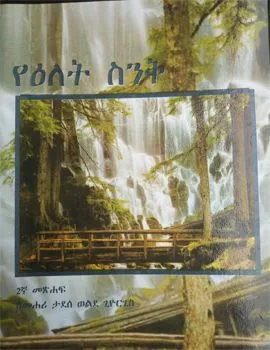
የዕለት ስንቅ yelet seneq መሐሪ ታደሰ ወልደ ጊዮርጊስ · 1999 -
የእመቤታችን ዘላለማዊ ድንግልናና ወላዲተ አምላክነት በቅዱስ ያዕቆብ ዘየእመቤታችን ዘላለማዊ ድንግልናና ወላዲተ አምላክነት በቅዱስ ያዕቆብ ዘሥሩግ ድርሳን Ye'Emebtachin Zelalemawi Dingilinana Weladite Amilakinet BeKidus Ya'ekob ZeSirug Dirsan Megabi Hadis Rodas Tadesse · 2016
-
የ"እማማ ደጓ"ና ሌሎች ተረቶችየ"እማማ ደጓ"ና ሌሎች ተረቶች Ye"emama Degua" na Leloch TEretoch Abeba Shitaye · 2012
-
የእማዋዬ እንባየእማዋዬ እንባ YeEmawaye Eniba Gesit Techane · 2013
-
የእምነት ሕይወትየእምነት ሕይወት YeEmnet Hiywot Pope Shinoda
-
የእርሳስ እና የደብተር ታሪክየእርሳስ እና የደብተር ታሪክ The Story of Pencil and Exercise Book Hebrom Mebirihatom
-
የእርቅ ማስታረቂያ ምዕራፍየእርቅ ማስታረቂያ ምዕራፍ Ye Erq Mastareqiya Mieraf መክብብ ደስታ in ያቶ መሰንበት ባልንጀርነት ታሪክና የምስጋና ግጥም
-
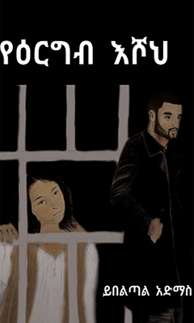
የዕርግብ እሾህ yeeregeb eshoh ይበልጣል አድማስ · 2014 -
የእሳቤ ሰዎች በኢትዮጵያየእሳቤ ሰዎች በኢትዮጵያ YeSabe Sewoch BeEthiopia Sahil Silase birhane Mariam
-
የእሥራት ዘመን በአበሻ አገርየእሥራት ዘመን በአበሻ አገር YeEserat Zemen BeAbesha Ager Dr. Hennry Esiregn
-
የእስር ቤቱ አበሳ በታላቁ ቤተ መንግስት (1966-1974)የእስር ቤቱ አበሳ በታላቁ ቤተ መንግስት (1966-1974) Ye E'sirBetu Abesa Betalaku Betemengsit(1966-1974) አበራ ጀምበሬ · 1993
-
 የዕቅበተ እምነት (Apologetics) ሥልጠና
yeeqbete emnet (Apologetics) seltena
የዕቅበተ እምነት (Apologetics) ሥልጠና
yeeqbete emnet (Apologetics) seltena
-
 የዕብራውያን መልዕክት
yeebrawyan meleeket
የዕብራውያን መልዕክት
yeebrawyan meleeket
-
የዕብራውያን ትሩጓሜየዕብራውያን ትሩጓሜ Ye'Ebrawiyan Tiruguame · 2012
-
የእትዬ አልማዝ የሳይንስ ታሪኮች (የሚፈውሰውን መድኃኒት ከዬት ይመጣልየእትዬ አልማዝ የሳይንስ ታሪኮች (የሚፈውሰውን መድኃኒት ከዬት ይመጣል?) YeEtiye Alimaz YeScienece Tarikoch (YeMifewisin Medhanit Keyet Yimetal?) W/t Bereket Leulseged
-
የእትዬ አልማዝ የሳይንስ ታሪኮች (የአልበርት አንስታይን ታሪክ)የእትዬ አልማዝ የሳይንስ ታሪኮች (የአልበርት አንስታይን ታሪክ) YeEthiyi Alimaz YeScience Tarikoch (YeAlbert Enestien Tarik) W/t Bereket Leulseged
-
የእነ ሳራ ዛፍየእነ ሳራ ዛፍ Ye'Ene Sara Zaf Tsion Kiros · 2017
-
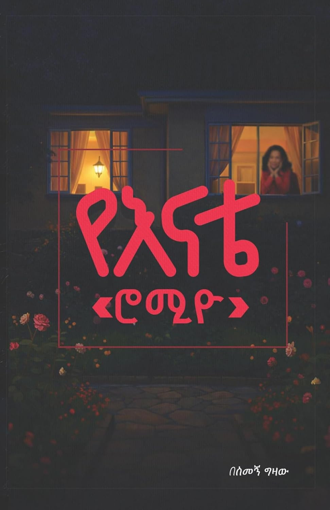
የእናቴ ሮሚዮ እና ሌሎች አጫጭር ታሪኮች My Mom’s ‘Romio’ ' ' Simegn Gizaw Bedada · 2026 -
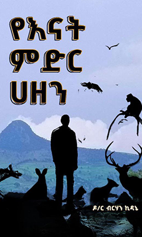
የእናት ምድር ኅዘን yenat meder hezen ዶ/ር ብርሃን ኪዳኔ · 2017 -
የእናት ጓዳ (የባህላዊና የውጭ አገር ምግቦች አዘገጃጀት)የእናት ጓዳ (የባህላዊና የውጭ አገር ምግቦች አዘገጃጀት) YeE'nat Guada (YeBahilawina Yewichi Ager Migiboch Azegejajet) Tsigie E'Qubemichael
-
የእናት ጓዳ (የባህላዊና የውጭ አገር ምግቦች አዘገጃጀት)ሁለተኛ መጽሐየእናት ጓዳ (የባህላዊና የውጭ አገር ምግቦች አዘገጃጀት)ሁለተኛ መጽሐፍ Yeenat Guada (Yebahilawina YeWich Ager Migiboch Azegejajet) Huletegna Metshaf Tsige U'Kubamichael · 1991
-
የእናቶቻችን ሞያየእናቶቻችን ሞያ YeEnatochachin Moya Leilet Tsige Mariam G/Rufael · 1966
-
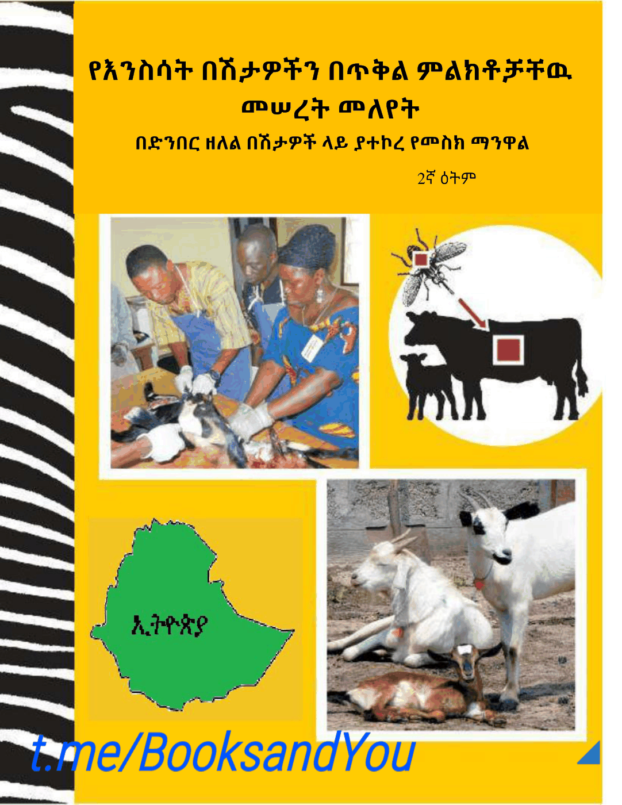
የእንስሳት በሽታዎችን በጥቅል ምልክቶቻቸዉ መሠረት መለየት yeenessat beshtawochen beteqel melektochachewu meseret meleyet ኮሪ ብራውን, ዶ/ር ዕፃይ ከበደ, ዶ/ር ዮውሃንስ ተክሌ, ዶ/ር አብርሃ ብስራት · 2015 -
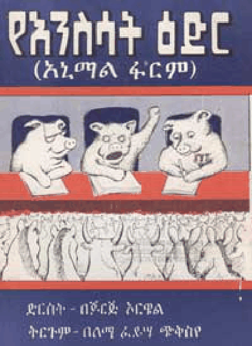
የእንስሳት ዕድር (አኒማል ፋርም) yeenessat eder (animal farem) ጆርጅ ኦርዌል, ለማ ፈይሣ ጭቅስየ, ቦጋለ በላቸው · 1990 -
የእንስሳት ድግስየእንስሳት ድግስ YeEnisisat Digis Rekik Desta G/Michael · 2013
-
የእንቁራሪት ሽርሽርየእንቁራሪት ሽርሽር YeEnkurarit Shirshir Samrawit Araya m. Mersha · 2013
-
የእንባዋ ቃልኪዳንየእንባዋ ቃልኪዳን Ye-Enbawa Qalkidan መክብብ ደስታ in ያቶ መሰንበት ባልንጀርነት ታሪክና የምስጋና ግጥም
-
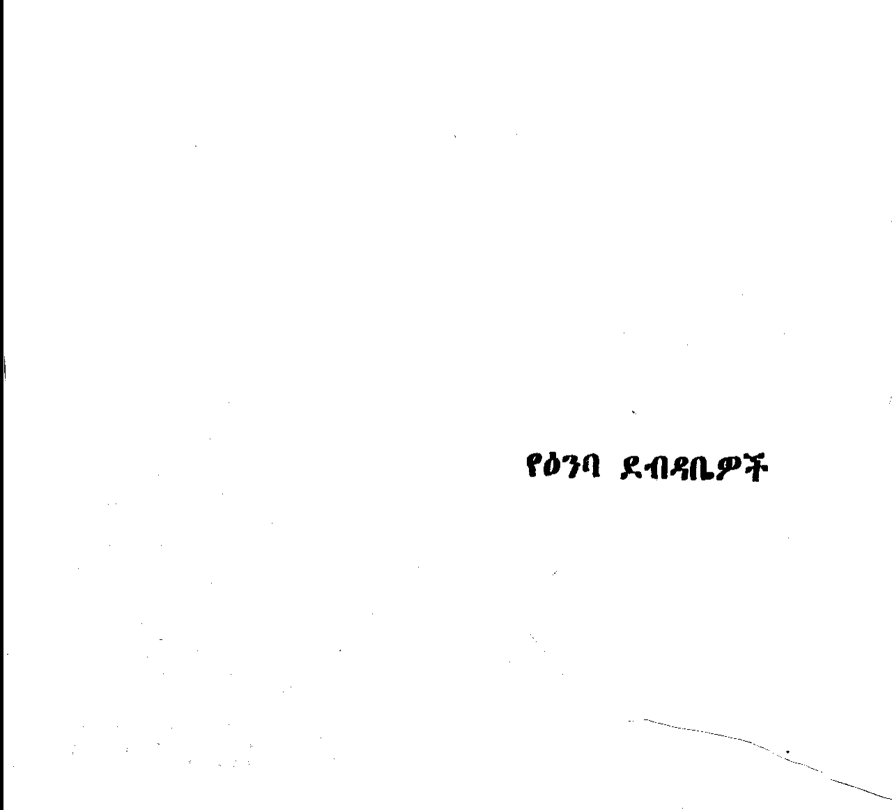
የዕንባ ደብዳቤዎች yeenba debdabewoch -
የዕንባ ጎርፍ ስኬትየዕንባ ጎርፍ ስኬት YeE'nba Gorif Siket Kibebe Tsehay
-
የእንግሊዘኛ-ኦሮምኛ-አማርኛየእንግሊዘኛ-ኦሮምኛ-አማርኛ Elellee (English-Oromo-Amharic Dictionary) (Galmee Jechoota Afaan Inglilizii-Oromoo-Amaaraa) Hinsene Mekuria
-
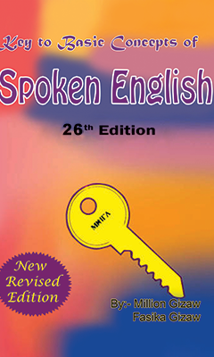
የእንግሊዝኛ ቋንቋ ንግግር መማሪያ yeenegliznya qwanqwa negeger memariya ዩኒቲ መፅሐፍ መደብር ፋሲካ · 2004 -
የዕ ዕለየዕ ዕለ Ye Eele ደበበ ሰይፉ in የብርሃን ፍቅር
-
የዕውቀት መልእክትየዕውቀት መልእክት Yeweket Melikt መክብብ ደስታ in ያቶ መሰንበት ባልንጀርነት ታሪክና የምስጋና ግጥም
-
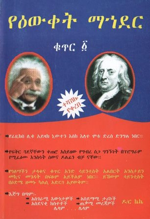
የዕውቀት ማኅደር ቁጥር ፩ yeewqet mahder quter 1 ዶ/ር ኬኬ -
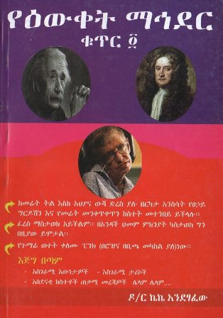
የዕውቀት ማኅደር ቁጥር ፬ yeewqet mahder quter 4 ኩምሳ ከበደ -
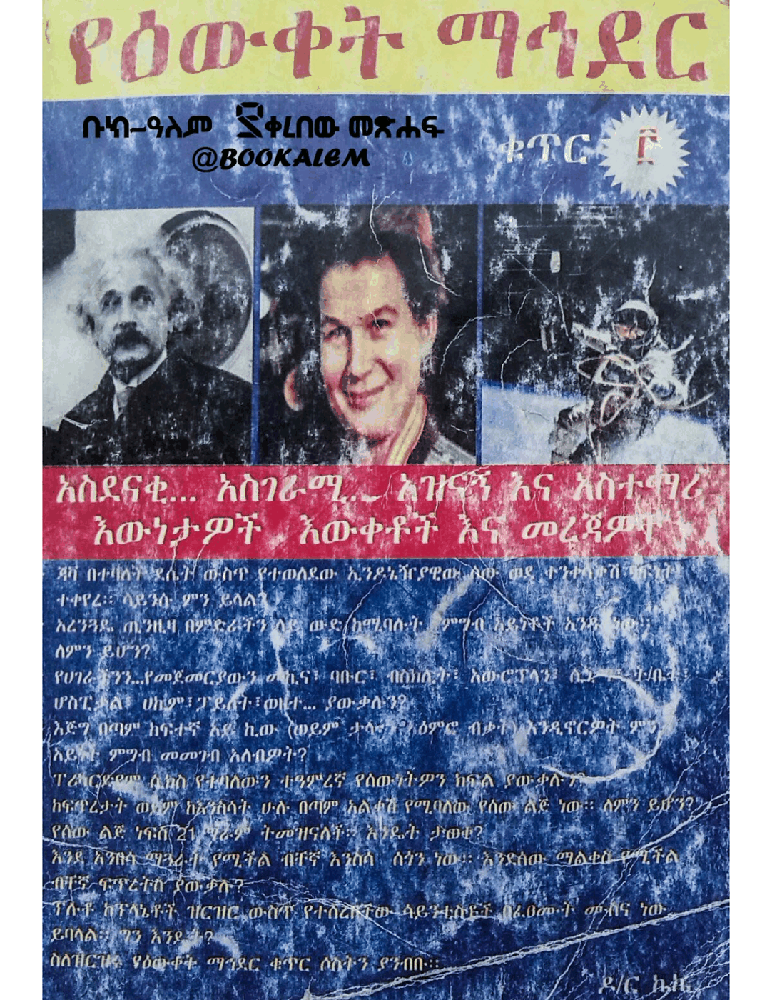
የዕውቀት ማኅደር ቁጥር 3 yeewqet mahder quter 3 ዶክተር ኬኬ · 2005 -
የዕውቀት ማዕድየዕውቀት ማዕድ Ye'Ewket Ma'ed Yihune Ayele
-
የዕውቀት ብልጭታየዕውቀት ብልጭታ Ye'Ewket Bilichita Kebede Michael
-
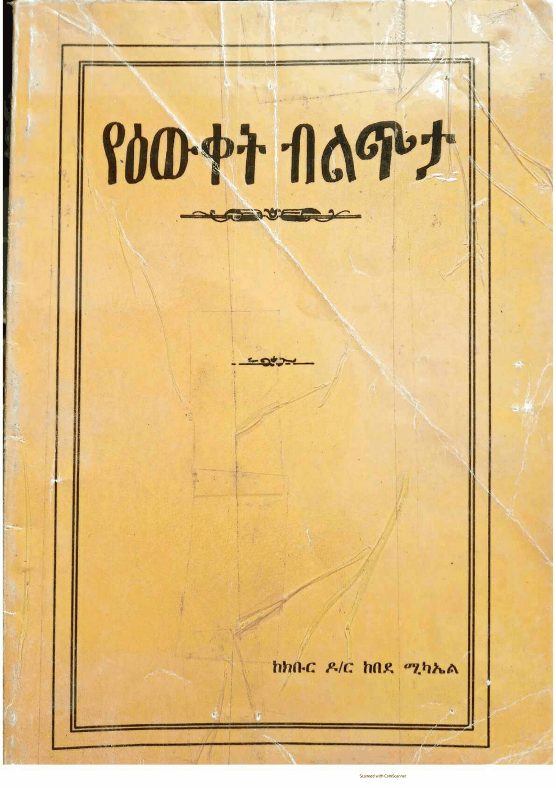
የዕውቀት ብልጭታ yeewqet belechta ከበደ ሚካኤል · 2014 -
የእውቅት አክፍሎተኛየእውቅት አክፍሎተኛ YeEwket Akifilotegna Mindaralew Zewde
-
የእድሜ አስቤዛ 86 ምርጥ ግጥሞች ቁጥር 1የእድሜ አስቤዛ 86 ምርጥ ግጥሞች ቁጥር 1 YeEdmie Asbieza Tesfaye Deresie
-
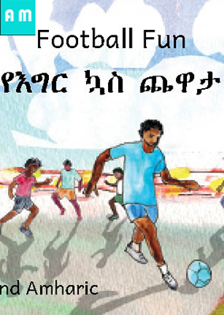
የእግር ኳስ ጨዋታ yeeger kwas chewata Ready Set Go Books -
የእግዚኣብሔር መንግስት ታሪክ በምድር ላይ (ጠቅላላ የቤተ ክርስቲያንየእግዚኣብሔር መንግስት ታሪክ በምድር ላይ (ጠቅላላ የቤተ ክርስቲያን ታሪክ)(ሁለተኛ መጽሐፍ) YeEgziabher Mengist Tarik Bemidir Lay (Tekilala Yebetechrisitiyan Tarik)(Andegna Metshaf)(Huletegna Metsihaf) Kesis Dr. Mikire Silase G/amanuel · 2013
-
የእግዚኣብሔር መንግስት ታሪክ በምድር ላይ (ጠቅላላ የቤተ ክርስቲያንየእግዚኣብሔር መንግስት ታሪክ በምድር ላይ (ጠቅላላ የቤተ ክርስቲያን ታሪክ)(አንደኛ መጽሐፍ) YeEgziabher Mengist Tarik Bemidir Lay (Tekilala Yebetechrisitiyan Tarik)(Andegna Metshaf) Kesis Dr. Mikire Silase G/amanuel · 2013
-
የእግዚአብሔር ስጦታ (ለኢትዮጵያ ዓለም ብርሃንና ለሌሎችም የተሰጠ ምላየእግዚአብሔር ስጦታ (ለኢትዮጵያ ዓለም ብርሃንና ለሌሎችም የተሰጠ ምላሽ) YeEgziabher Sitota (LeEthiopia Alem Birhan ena LeLelochim yetesete Milash)
-
የእግዚአብሔርን ፍቅር ለሙስሊሞች ማካፈል ለክርስቲያኖች ጠቃሚ መመሪያየእግዚአብሔርን ፍቅር ለሙስሊሞች ማካፈል ለክርስቲያኖች ጠቃሚ መመሪያ yeegziabheren feqer lemuslimoch makafel lekerestiyanoch teqami memeriya
-
የእግዜር እንግዶች እና ሌሎችምየእግዜር እንግዶች እና ሌሎችም Yegzer Engidoch ena Lelochim
-
የእግዜር ድርሰትየእግዜር ድርሰት YeEgzer Diriset Yibabe Adane (Girum Tibebu)
-
 የእጩ አገልጋዮች ስልጠና ማኑዋል
yechu agelgayoch seltena manuwal
የእጩ አገልጋዮች ስልጠና ማኑዋል
yechu agelgayoch seltena manuwal
-
የእፍ ንገርየእፍ ንገር Ye Ef Nege አበራ ለማ in አውጫጭኝ
-
የኦርቶዶክስ ተዋሕዶ ልጆች አስተዳደግየኦርቶዶክስ ተዋሕዶ ልጆች አስተዳደግ YeOrthodoks Tewahedo Lijoch Asitedadeg Dawit Desta · 2018
-
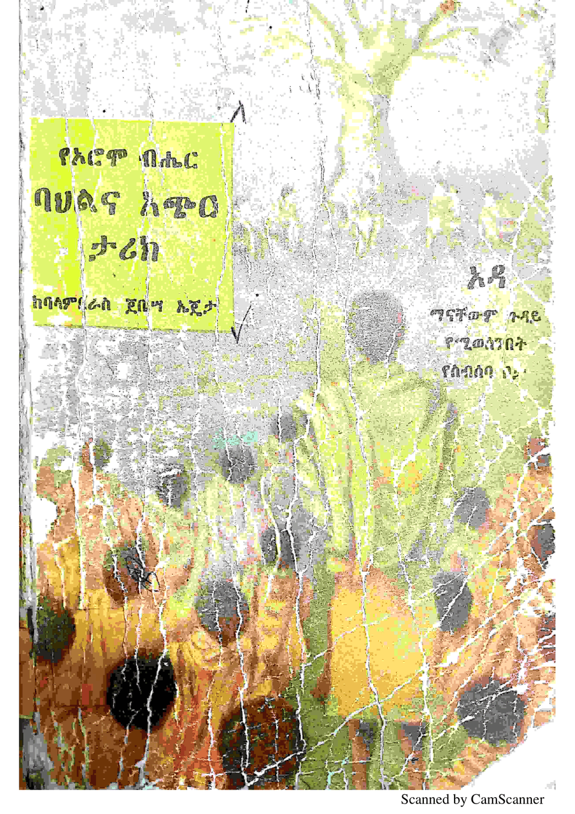
የኦሮም ብሔር ባህልና አጭር ታሪክ yeorom beher bahelna acher tarik ባላምቢራስ ጀቤሣ ኤጄታ -
የኦሮምኛ-እንግሊዘኛ-አማርኛ ንግግር መማሪያየኦሮምኛ-እንግሊዘኛ-አማርኛ ንግግር መማሪያ Haasaa Gadaa Conversation (Learn Oromo-English-Amharic without a Master) Hinsene Mekuria (M.A)
-
የኦሮሞ ሕዝብ ታሪክየኦሮሞ ሕዝብ ታሪክ YeOromo Hizib Tarik Dr.Negaso Gidada
-
የኦሮሞ ብሔር ባህልና አጭር ታሪክየኦሮሞ ብሔር ባህልና አጭር ታሪክ YeOromo Biher Bahilina Achir Tarik Balambaras Jebesa Ejeta
-
የኦሮሞ ታሪክየኦሮሞ ታሪክ YeOromo Tarik Aleka Atsime
-
የኦሮሞ ታሪክ (ከጥንት እስከ 1890ዎቹ መጨረሻ)የኦሮሞ ታሪክ (ከጥንት እስከ 1890ዎቹ መጨረሻ) YeOromo Tarik (KeTinit eske 1890wochu Mecheresha) Eshetu Eirena Dibaba · 2009
-
የኦሮሞ እና የአማራው እውነተኛው የዘር ምንጭየኦሮሞ እና የአማራው እውነተኛው የዘር ምንጭ YeOromona YeAmara Ewnetegnaw Yezer Minich Prof.Fikire Tolosa Jigsa
-
የኦሮሞ የማንነት ታሪክየኦሮሞ የማንነት ታሪክ YeOromo YeManinet Tarik Direbi Demissie Boku